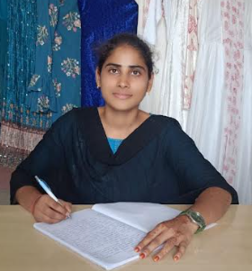

MAHATMA JYOTHIBA PHULE
TELANGANA BACKWARD CLASSES
WELFARE RESIDENTIAL
DEGREE COLLEGE FOR WOMEN
Medchal & Hyderabad
👗 Department Code: BFT-01
Bachelor of Fashion Technology
About the Department
The Bachelor of Fashion Technology (BFT) department focuses on fashion design,
garment technology, textile science, and fashion innovation. The program prepares
students for careers in fashion design, apparel production, textile industry,
fashion marketing, and entrepreneurship.
With experienced faculty, modern laboratories, and practical training,
students gain hands-on experience in garment construction, fashion illustration,
textile design, and fashion merchandising.
Programs Offered
BFT (Bachelor of Fashion Technology)
J. Usha Rani is a faculty in the Department of Fashion Technnology. She have two years of professional experience in fabric marketing, where she gained practical knowledge of textile products, market trends, and customer engagement strategies. This role helped to develop skills in sales, communication, and understanding consumer preferences within the textile industry. In addition to her industry experience, She worked as a Degree Lecturer in the Department of Fashion Technology for four years, where She taught and mentored students in fashion design, textile science, and related subjects. During this period, She was involved in curriculum planning, academic guidance, and organizing workshops to enhance student learning. These experiences allowed me to interact with diverse groups and understand their professional and social needs. It also enhanced her ability to apply practical knowledge in an academic setting. Overall, she combined experience in fabric marketing and teaching reflects her commitment to professional growth and community development.
J. Usha Rani
B.Tech(Textile Technology)
B. Soniya is a faculty in the Department of Fashion Technology. She have one year of experience working as a Degree Lecturer in the Department of Fashion Technology. During this time, She actively contributed to curriculum delivery, lesson planning, and classroom management, ensuring a productive learning environment.She also mentored students in practical projects and assignments, helping them develop both technical and creative skills. She collaborated with colleagues to improve departmental processes and promote knowledge sharing. Her teaching experience strengthened her communication, leadership, and organizational abilities. It also reinforced her commitment to fostering professional growth and skill development in students.

B. Soniya
B.A.(Honours)Fashion Design
S. Gayathri is a faculty in the Department of Fashion Technology. She have one year of professional experience working as a Textile Designer in the Handloom Department in Siddipet, where She was involved in designing and developing traditional and contemporary textile patterns. During this period, she gained hands-on experience with fabric selection, color coordination, and pattern creation, ensuring high-quality and market-relevant designs. She contributed to enhancing the aesthetic appeal and functionality of handloom products. This experience allowed to develop strong creative and technical skills in textile design.Working in this environment strengthened her problem-solving, teamwork, and project management abilities. Overall, her tenure in the Handloom Department reflects her dedication to creativity, craftsmanship, and the promotion of traditional textile arts.